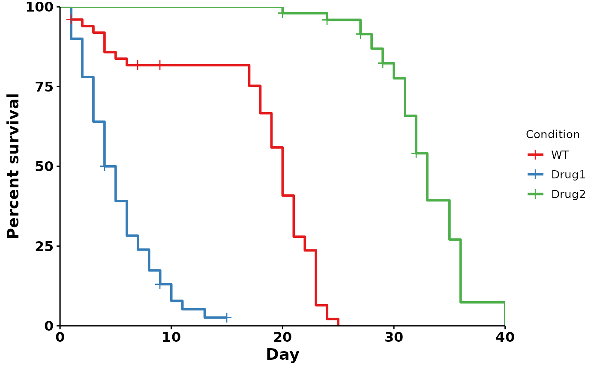
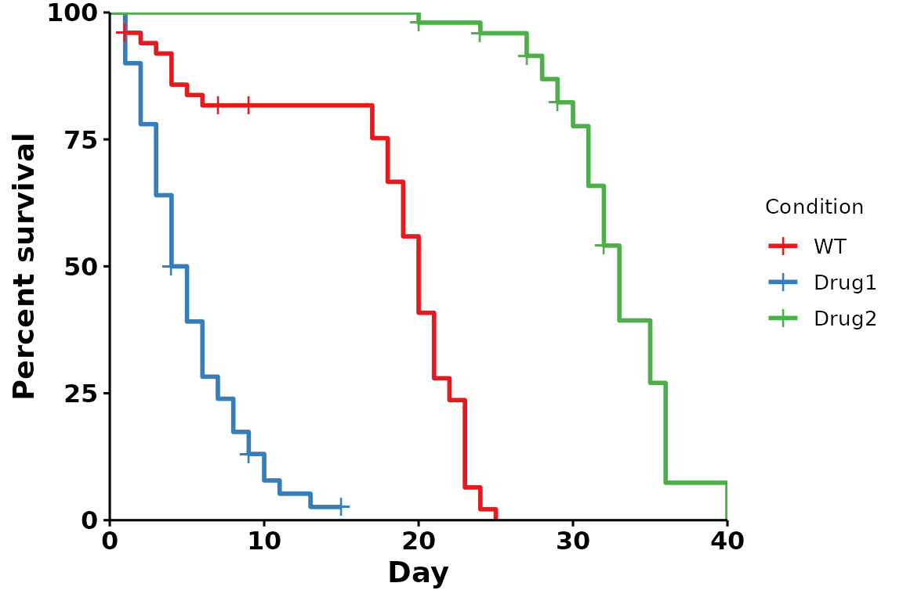

Customizing Plots
customizing-plots.RmdThis vignette teaches you how to further customize your survival plots.
We’ll start by discussing how to change the colors of the plot, using either custom colors, RColorBrewer palettes or journal colors.
We’ll then discuss how to customize the legend positions and titles.
Lastly, we finish off by adding the 50% median survival line.
Color palettes
Brewer palettes
RColorBrewer
provides a list of useful, aesthetically pleasing palettes that are
frequently used in R. To use these palettes, change the
palette parameter:
# Using the Set1 brewer palette
p <- run_bulksurv(sample_data,
sample_order = c("WT", "Drug1", "Drug2"),
print_stats = FALSE,
palette = "Set1" # Custom brewer palette
)
Journal palettes
ggsci provides a collection of palettes inspired by scientific publishing groups. These colors can also be used in our plots:
# Using the nature palette
p <- run_bulksurv(sample_data,
sample_order = c("WT", "Drug1", "Drug2"),
print_stats = FALSE,
palette = "npg" # Nature palette
)
Specific colors
We can also specify colors, either by name (“black”, “blue”), or by hexadecimal value (“#80080”):
# Using manual colors
p <- run_bulksurv(sample_data, sample_order = c("WT", "Drug1", "Drug2"),
print_stats = FALSE,
palette = c("black", "red", "#800080") # Custom colors
)
Legends
Removing legend title
p <- run_bulksurv(sample_data, sample_order = c("WT", "Drug1", "Drug2"),
print_stats = FALSE,
legend.title = "" # Remove the legend title
)
Specifying legend position
Specifying a position (right, left,
bottom or top) with
legend.position:
p <- run_bulksurv(sample_data,
sample_order = c("WT", "Drug1", "Drug2"),
print_stats = FALSE,
legend.position = "bottom")
Specific legend coordinates
Specific coordinates can also be used. For bottom left, use
legend.position = c(0,0); for top right, use
legend.position = c(1,1).
p <- run_bulksurv(sample_data,
sample_order = c("WT", "Drug1", "Drug2"),
print_stats = FALSE,
legend.position = c(0.9, 0.9))Axis customizations
Change the x-axis breaks
p <- run_bulksurv(sample_data, sample_order = c("WT", "Drug1", "Drug2"),
print_stats = FALSE,
break.x.by = 5 # x-axis: break every 5 days
)
Annotations
Adding pvalue and 50% median survival line
p <- run_bulksurv(sample_data, sample_order = c("WT", "Drug1", "Drug2"),
print_stats = FALSE,
add.median.survival = TRUE, # Add median survival
add.pval = TRUE # Add pvalue
)
Add confidence interval
p <- run_bulksurv(sample_data, sample_order = c("WT", "Drug1", "Drug2"),
print_stats = FALSE,
add.conf.int = TRUE
)
Putting it all together
p <- run_bulksurv(sample_data, sample_order = c("WT", "Drug1", "Drug2"),
print_stats = FALSE,
palette = c("black", "red", "purple"), # Custom colors
legend.title = "", # Remove legend title
legend.position = c(0.9, 0.9), # Position legend at top right
add.pval = TRUE # Add pvalue
)